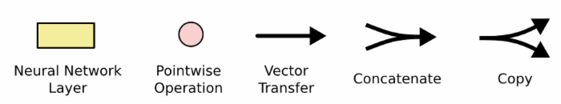
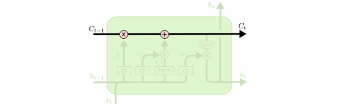
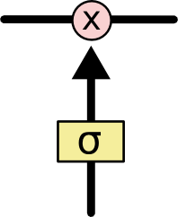
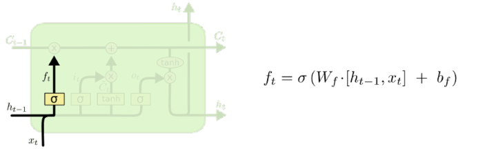
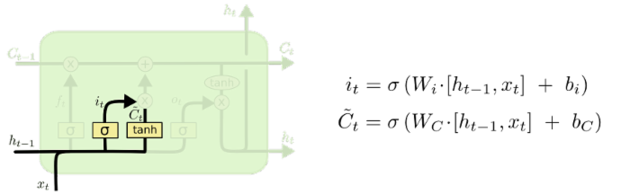
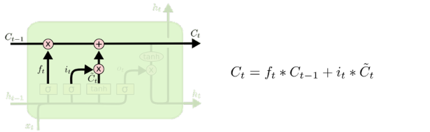
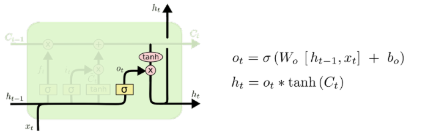

循环神经网络介绍
什么是LSTM？
LSTM 即 Long Short Term 网络——一般就叫做LSTM——是一种特殊的RNN，可以学习长期依赖信息。LSTM由 Hochreiter & Schmidhuber (1997) 提出， 并被 Alex Graves 进行了改良和推广。在很多问题，LSTM 都取得了相当巨大的成功，并得到了广泛的使用。
LSTM 通过刻意的设计来避免长期依赖问题。记住长期的信息是 LSTM 的默认行为，而非需要付出很大代价才能获得的能力。
所有的 RNN都具有一种重复神经网络模块的链式的形式，在标准的RNN中，这个重复的模块只有一个非常简单的结构，例如一个 tanh 层。

上图即标准RNN中重复模块包含单一的层
LSTM同样是这样的结构，但是重复的模块拥有一个不同的结构。不同于单一神经网络层，这里有四个，以一种非常特殊的方式进行交互。

上图即LSTM中的重复模块包含的四个交互的层
我们会一步一步的剖析LSTM解析图。现在，我们先来熟悉一下途中使用的各种元素的图标。

LSTM中的图标
在上面的图例中，每一条黑线传输着一整个向量，从一个节点的输出到其他节点的输入。粉色的圈代表 pointwise (逐点的)操作，诸如向量的和，而黄色的矩阵就是学习到的神经网络层。合在一起的线表示向量的连接，分开的线表示内容被复制，然后分发到不同的位置。
2.LSTM核心内容
LSTM的关键就是细胞状态（cell），水平线在图上方贯穿运行，细胞状态类似于传送带，直接在整个链上运行，只有一些少量的线性交互，信息在上面流传保持不变会很容易。

LSTM 有通过精心设计的称作"门"的结构来去除或者增加信息到细胞状态的能力。门是一种让信息选择式通过的方法。他们包含一个 sigmoid 神经网络层和一个 pointwise 乘法操作。

sigmoid 层输出 0 到 1 之间的数值，描述每个部分有多少量可以通过。0 代表"不允许任何量通过"，1 就指"允许任何量通过"。
LSTM有三个门，来保护和控制细胞状态。
3.逐步理解LSTM
LSTM中第一步是决定会从细胞状态中丢弃什么信息。这个决定通过一个称为 忘记门层 的门来完成。该门会读取 \(h_{t-1}\) 和 \(x_{t}\) ，输出一个在 0 到 1 之间的数值给每个在细胞状态中的数字。1 表示"完全保留"，0 代表"完全舍弃"。
让我们回到 语言模型 的例子中来基于已经看到的词预测下一个词。在这个问题中，细胞状态可能包含当前 主语 的类别，因此正确的 代词 可以被选择出来。当我们看到新的 代词 可以被选择出来。当我们看到新的 代词 ，我们希望忘记旧的 代词。

3.1决定丢弃信息
下一步是确定什么样的新信息被存放在细胞状态中。这里包含两部分。第一，sigmoid 层称 "输入门层" 决定什么值我们将要更新。然后，一个 tanh 层创建一个一个新的候选值向量，\(\)，会被加入到状态中。下一步，我们会将这两个信息来产生对状态的更新。
在我们 语言模型 的例子中，我们希望增加新的 代词 的类别到细胞状态中，来替代旧的需要忘记的 代词。

3.2确定更新的信息
现在是更新旧细胞状态的时间了，\(C_{t-1}\) 更新为 \(C_{t}\)
我们把旧状态与 \(f_t\) 相乘，丢弃掉确定丢弃的信息，接着加上 \(i_t * _t\) ，这就是新的候选值。
在 语言模型 的例子中，这就是我们实际根据前面确定的目标，丢弃 旧代词 的类别信息并添加新的信息的地方。

3.3更新细胞状态
最终，我们需要确定输出什么值，这个输出将会基于我们的细胞状态，但是也是一个过滤后的版本。首先，我们运行一个 sigmoid 层来确定细胞状态的哪个部分将输出出去。接着，我们把细胞状态通过 tanh 进行处理，得到一个在 -1 到 1 之间的值，并将它和 sigmoid 门的输出相乘，最终我们仅仅会输出我们确定输出的那部分。
在 语言模型 的例子中，因为他就看到了一个 代词 ，可能需要输出一个 代词 相关的信息。例如，可能输出是否代词是单数还是负数。如果是 动词 的话，我们也他要知道 动词 需要进行的词形变化。
